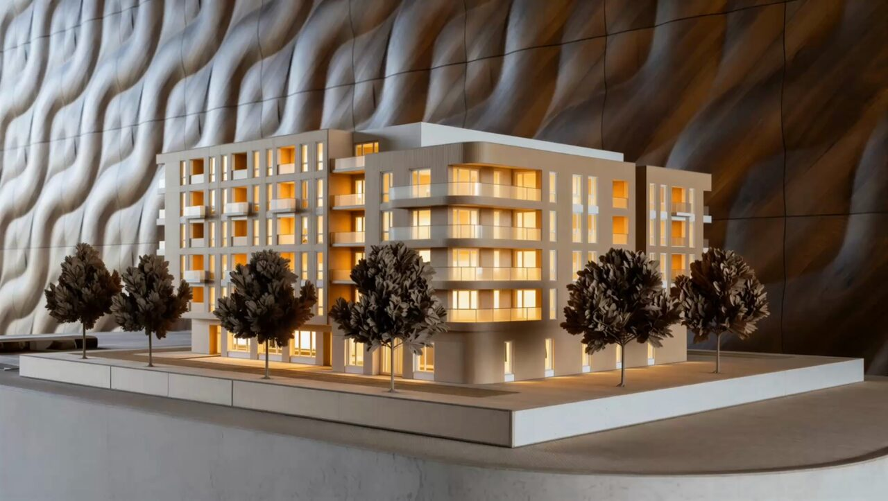
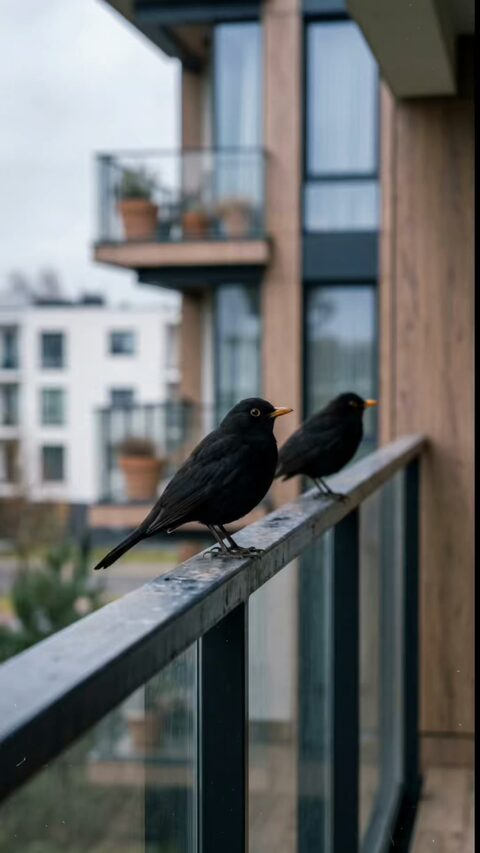
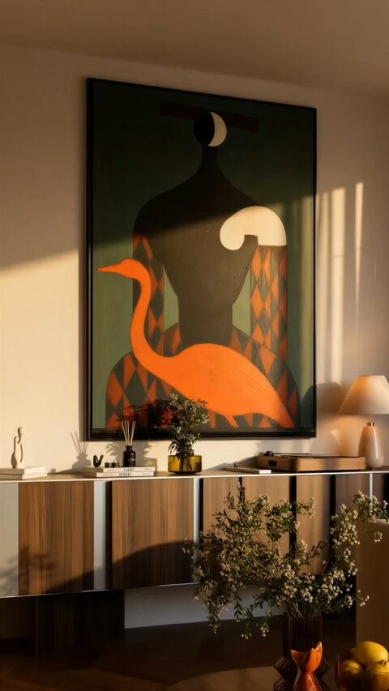
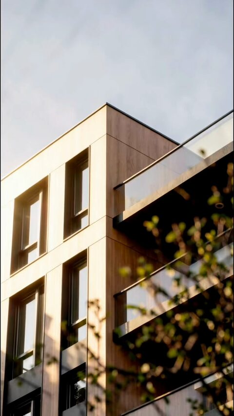
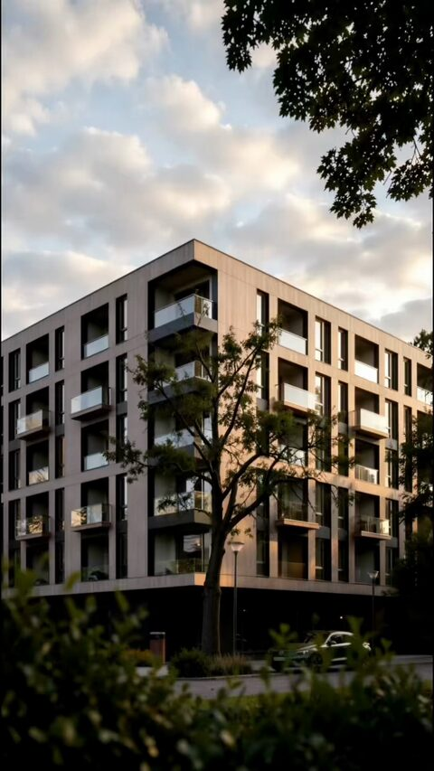
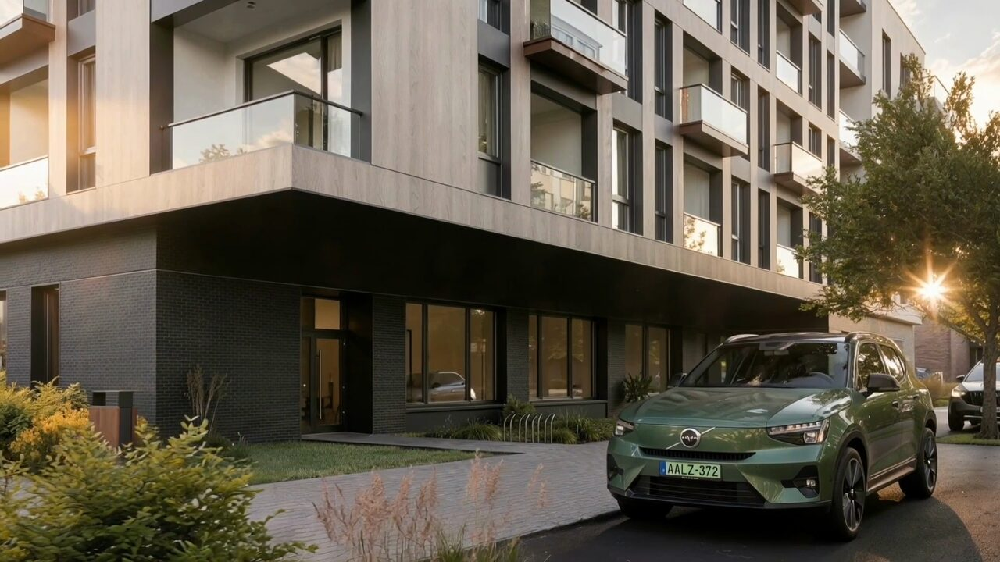
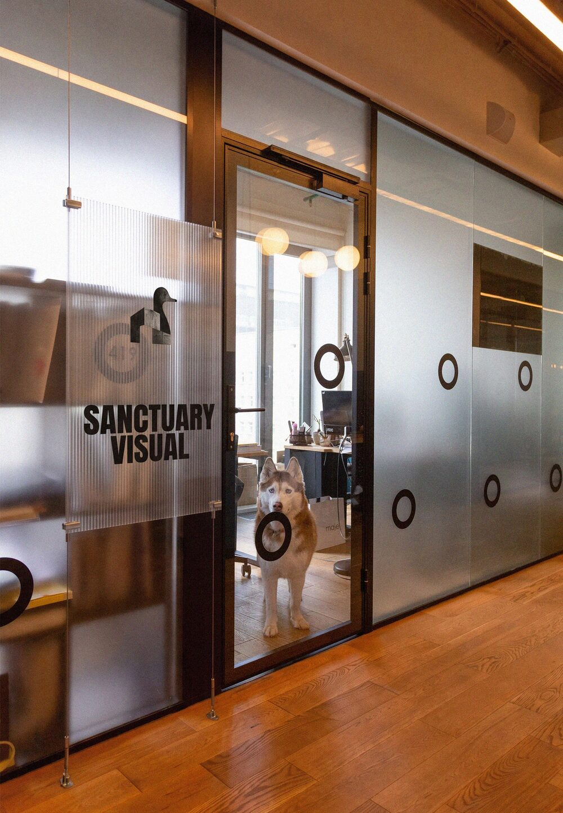

Buyers can't step inside a home that isn't built yet. We show them what living there feels like.
Sanctuary Visual is an architectural visualization studio for residential developers. Our stills and films are full of warm light and everyday life, made to win buyers over and help you sell off-plan.
See the work01Stills
02For social
Vertical cuts made for social feeds. Tap a clip to hear it.
-

-

-

-

03Film
The full development film, with sound.

About
How we work

A technically perfect render can still leave buyers cold. We start from how people want to feel at home and build every image around it.
We combine rigorous 3D precision with modern AI tools to streamline our production, ensuring exceptional Art Direction without delaying your project timeline. Rather than focusing solely on technical renders, we design every image based on buyer psychology—crafting spatial stories that trigger an instant emotional connection. By combining artistic control with targeted sales strategy, we help developers elevate perceived project value and accelerate off-plan sales.
Winning the Attention War Together
To give your project the edge it deserves, we continuously integrate the latest visual technologies with modern, platform-native marketing logic. When you work with us, we align our visual creation with a social media-optimised campaign strategy.
-
Built for the Attention War
We create dynamic, platform-native visual assets engineered to instantly capture target buyers' attention within the first two seconds of scrolling.
-
Tech Meets Marketing Strategy
By combining cutting-edge visual technologies with proven marketing solutions, we transform standard architectural renders into high-converting campaign assets.
-
Frictionless Collaboration
We make working together effortless through streamlined workflows, clear communication, and guaranteed delivery times, letting you focus fully on your development while we handle the visuals.
Contact
Discuss your project
Tell us about your development and when you plan to launch. We'll come back with ideas and a proposal.
hello@example.com- Phone
- +00 000 000 000
- Studio
- City, Country